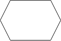
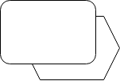
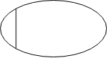

Eine Ereignisgesteuerte Prozesskette (EPK) ist eine grafische Darstellung von Geschäftsprozessen. Sie wird eingesetzt, um Abläufe und Arbeitsschritte zu visualisieren, zu analysieren und zu optimieren.
- Eine grafische Darstellung von Geschäftsprozessen
- Visualisiert den zeitlichen und sachlogischen Ablauf von Ereignissen und Funktionen
- Wird zur Analyse und Optimierung von Vorgängen verwendet
- Wurde 1992 von einer Arbeitsgruppe unter Leitung von Wilhelm Scheer an der Universität des Saarlandes entwickelt
- Ist vor allem im deutschsprachigen Raum verbreitet
Übersicht
| Symbol | Name | Beschreibung |
|---|---|---|
|  | Ereignis | Ereignisse sind eingetretene Zustände, wie zum Beispiel: “Auftrag erhalten”. |
| Funktion | Die Funktion beschreibt einen Arbeitsschritt, der auf ein Ereignis folgt, wie zum Beispiel: “Auftrag bearbeiten”. | |
| UND Operator | Alle dem “Und” Operator folgenden bzw. ausgehenden Elemente treten ein. | |
| ODER Operator | Mindestens ein, dem “Oder” Operator folgendes bzw. ausgehendes Element, tritt ein. Es können mehr Elemente eintreten. | |
 |
Exklusives-ODER Operator | Nur ein Element der folgenden bzw. ausgehenden tritt ein. |
|  | Prozesswegweiser | Der Prozesswegweiser verweist auf weitere Prozesse. |
|  | Organisationseinheit | Beschreibt die Rolle der zuständigen Person/Abteilung z.B. Qualitätsmanager. |
.png){kind=link}
{kind=link}